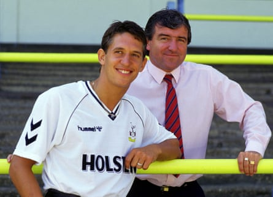
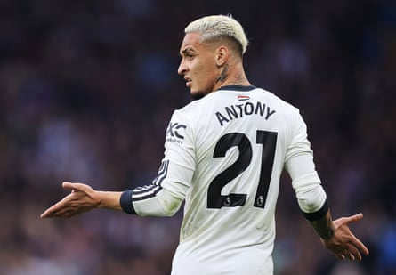

W hich transfer fee blew your mind? It was probably Spurs signing Gazza for £2m in the summer of 1988. TWO MILLION. No one is worth that kind of money. The following year, I distinctly remember running into the living room – Spurs had just signed Gary Lineker. I was preparing for the season ahead, invisible football at my feet, commentating to myself: “Gascoigne, to Waddle, in for LINEKERRRR.” The next moment I switched on the TV and someone (let’s say Ray Stubbs) was telling me that Spurs had sold Waddle to Marseille. I was bereft. There was no warning. For me, or for Lineker it turns out.
I heard the striker talking about the transfer recently on the excellent What Did You Do Yesterday? podcast hosted by David O’Doherty and generic broadcaster Max Rushden (perhaps the second-best podcast he hosts).
I asked Lineker whether he was as sad as I was when Waddle left. “I imagine I was considerably sadder. I signed for Spurs and then I went on holiday and I got the news; my agent called me and said: “They’ve sold Chris Waddle to Marseille.” Honestly it was like someone stealing 15 goals from my back pocket. He was so good, so good …”
Gary Lineker with his manager Terry Venables after signing for Tottenham in 1989. The striker had no idea Chris Waddle might leave.Photograph: Action Images/Action Images/Reuters
This may be the most self-indulgent way to illustrate the blind beauty of transfers back then – for fans and teammates. They just appeared out of nowhere like the Dungeon Master (press the red button for other more youth-friendly references). Patrick Bernal, Hugo Lambert and I playing Championship Manager 93 on the Amiga, flicking on the radio to hear Tottenham had signed Jürgen Klinsmann. No warning. No rumours. Just bang. Klinsmann.
For Cambridge United signings you had to wait for the Cambridge Evening News to see Steve Claridge’s beaming face holding a scarf aloft. I was not allowed, and too square, to ring ClubCall, an 0898 number, 90p a minute, to find out whether we were selling Alan Kimble to Wimbledon.
That guy recording messages from a shed on an answerphone must be sitting somewhere now thinking if only he’d been born 30 years later, he’d be earning a fortune writing “Here We Go” on X to announce Everton’s purchase of Thierno Barry .
At the lower reaches of the EFL, transfers do still pop up nostalgically from nowhere. A picture of a man’s face, straight to Wikipedia to find out who Ben Purrington is, and then finding a mate who supports Charlton to ask whether he’s any good. Elis James still hasn’t got back to me about whether the former Swansea under-21 keeper Ben Hughes can do a job between the sticks in the Vertu Trophy.
At the top of the Premier League, though, with TV and radio shows hosted by professional transfer influencers, and with flight tracking of private jets, almost nothing is unknown. Either that or you just keep linking a player with every possible destination so that eventually you say the right thing. “My understanding is …” “I’ve just exchanged a message from someone close to the club.” “All my sources tell me the player is determined to push this through.” Maybe some people with more self-control manage to ignore this stuff and watch Chris Woakes moving it perfectly off a length for hours at Edgbaston without reaching for the second screen and typing “Eze Spurs”.
New transfers are fun and exciting. But the hype machine ignores a few basic realities. There is no guarantee of it working out, even if you spend more than anyone’s spent before. In fact, a cursory look at the most expensive transfers of all time suggests they are more likely to fail.
In purely football terms – I’m not checking the shirt sales numbers – Neymar to Paris Saint-Germain for just under £200m (that’s a hundred 1988 Gazzas!) didn’t deliver the Champions League. Ditto Kylian Mbappé (for about £160m). The rest of the top 10: João Félix to Atleti, Enzo Fernández to Chelsea, Philippe Coutinho to Barça, Antoine Griezmann to Barça, Florian Wirtz to Liverpool, Moisés Caicedo to Chelsea, Declan Rice to Arsenal, Jack Grealish to Manchester City. Perhaps it’s a little early to judge Wirtz. But with all the caveats of how you define success, how many of them have been worth the money? Or even taking the money out of it, how many have delivered consistently on the pitch? Maybe Rice is the only one? OK, Mbappé’s 256 goals in 308 games seems pretty good, but … look at PSG now, look at Real Madrid now.
‘Poor Antony, always getting mentioned in these articles; he’s taken a lot of the heat off Nicolas Pépé.’Photograph: Simon Stacpoole/Offside/Getty Images
Taking inflation into account, of course money is sometimes well spent: £80m for Ronaldo in 2009 feels like good business for Real Madrid – a few million less than United spent on Antony 13 years later . Poor Antony, always getting mentioned in these articles; he’s taken a lot of the heat off Nicolas Pépé.
Is it just the pressure of such a high fee? Or the fact we judge someone who cost a hundred million in a different way to someone who commands half that? Fifty million pounds still seems quite a lot for, say, Richarlison. Out of the most expensive 100 transfers of all time, if generous you could make a case that about 40 have worked out.
What a terrible hit rate. Why are so many of us blind to the possibility that a new face won’t work out? You’ve seen a seven-minute heavily edited YouTube video to early 2000s Europop. There’s no way they’ve made Ricky van Wolfswinkel look like Kaká. He simply is just that good.
There is actually a chance that someone already at your club will get better at football. Most of them train every day. It remains baffling how often a manager is praised for being able to improve players. Feels like a prerequisite.
Of course relentless 24-hour coverage of existing squad players would be even less interesting than the rumour mill. “My understanding is that Joelinton was good last year and might be good again this year.” Official club accounts making big reveal videos for a centre mid you signed three years ago may not get the numbers. But there’s every chance they’ll be more important this season than the guy you just signed for £30m from Strasbourg.
Nevertheless, in a month or so someone will have won the transfer window. It would be great to have a life option to switch off rumour notifications, reject those cookies and select the 1988 discovery option.